Quick typed prescription freeze — review evidence
Actual before/after pairs. The entered60 seconds /20 metres stay visible while the type, value and unit controls become disabled consistently with the rest of the frozen form. No layout redesign. Screenshot evidence does not grant independent acceptance or release approval.
Baseline d6fad27; proposed functional commit 93a26e83bf82a1664c1441ac4f0ea04edc579733
Exact source and image hashes, viewport and DOM observations. Original released-main comparison remains unchanged.
saving · 320px
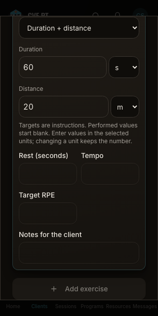
before · 8dd27586367a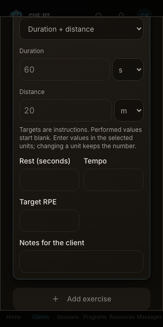
after · 5b3d262938b9saving · 390px
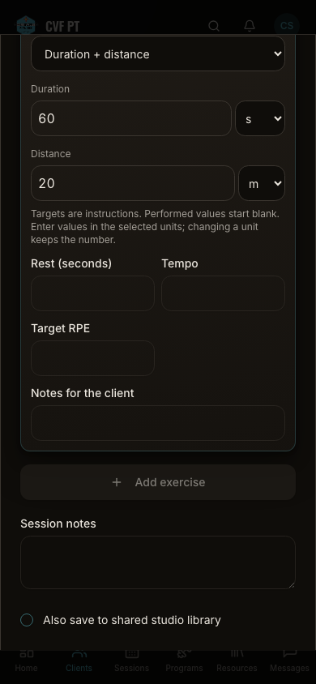
before · 97adb4e8fe19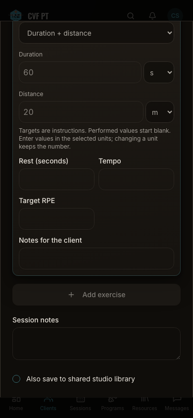
after · 263fcaf173a3saving · 1440px
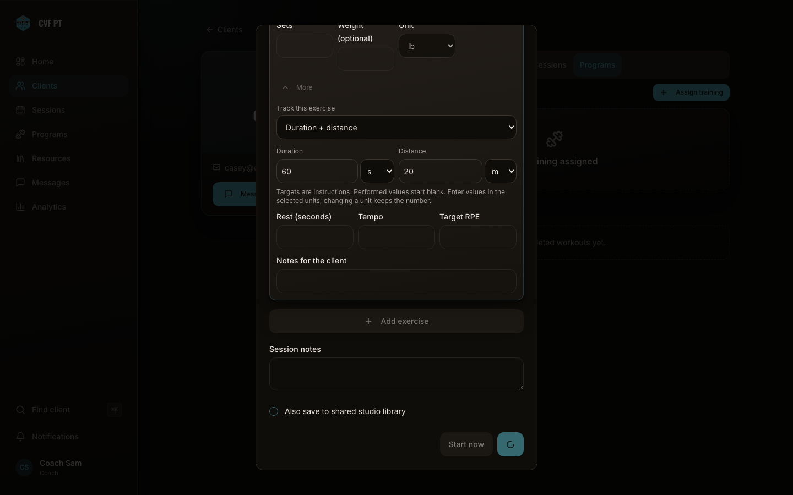
before · 990a6fb25443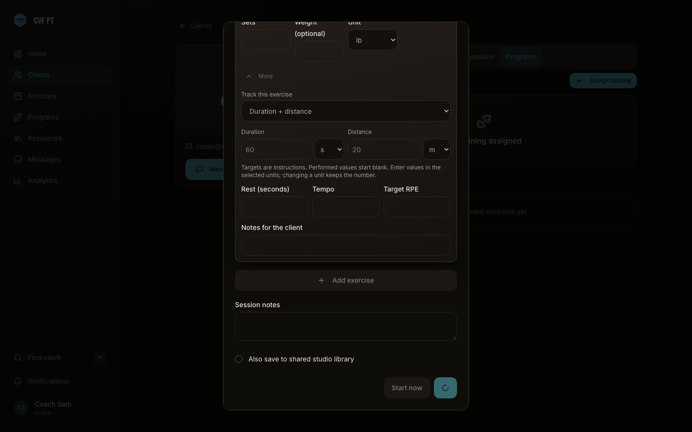
after · a48c02fecad4uncertain · 320px
before · 7bab7f41e5abafter · 5a235d78dff7
uncertain · 390px
before · da37b7dcaa20after · 55c7de9ccb34
uncertain · 1440px
before · cb27c4775505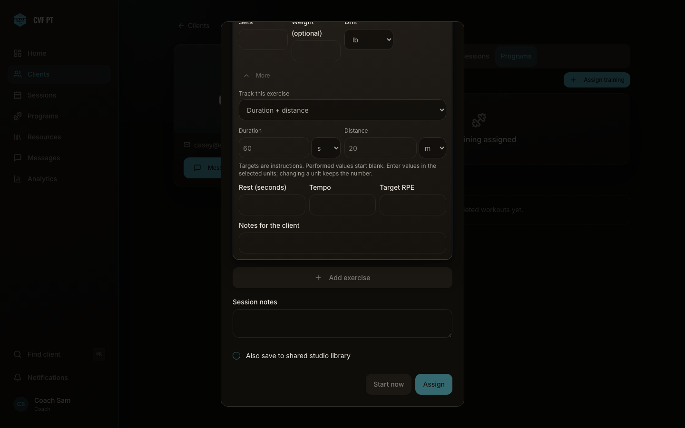
after · 1cbeee31f3f7 checking · 320px
before · 0bf59b5af4bdafter · 3637e38c1791
checking · 390px
before · 621d9bb0d236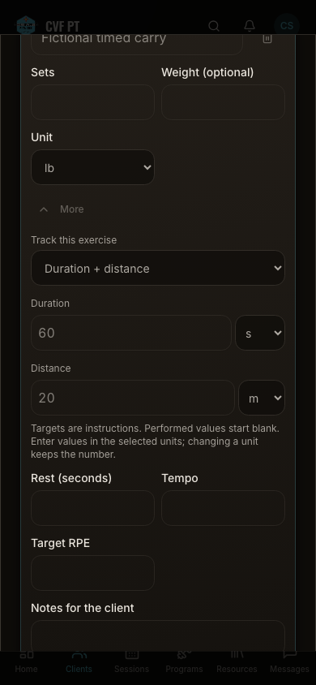
after · 10a53b38d619 checking · 1440px
before · 9ee049e7e6d1after · b8a6efb0b390
unrecovered · 320px
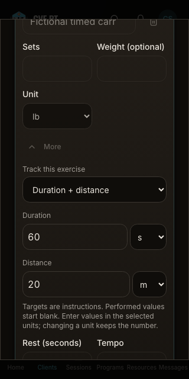
before · 2bb8fe8b8bd8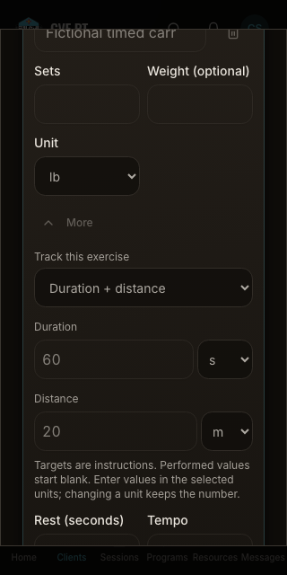
after · 95fb9a65b5a1unrecovered · 390px
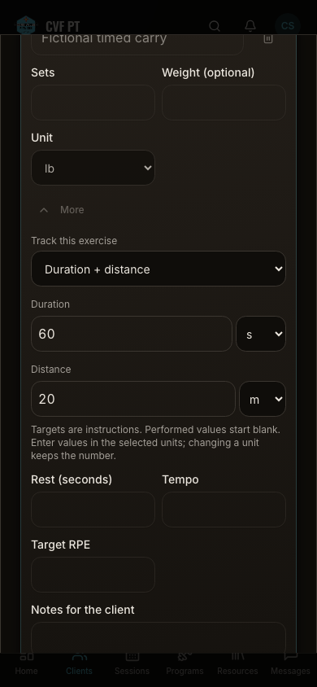
before · 66d1c933769dafter · 5839541b01c1unrecovered · 1440px
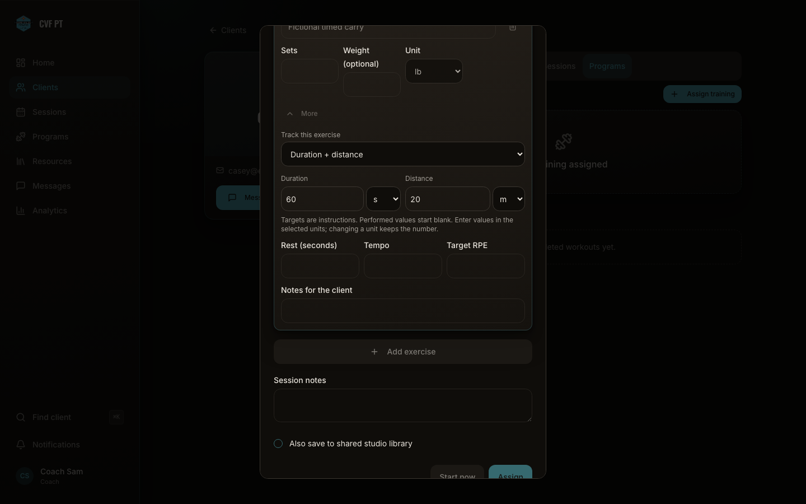
before · a7d77ff7cc78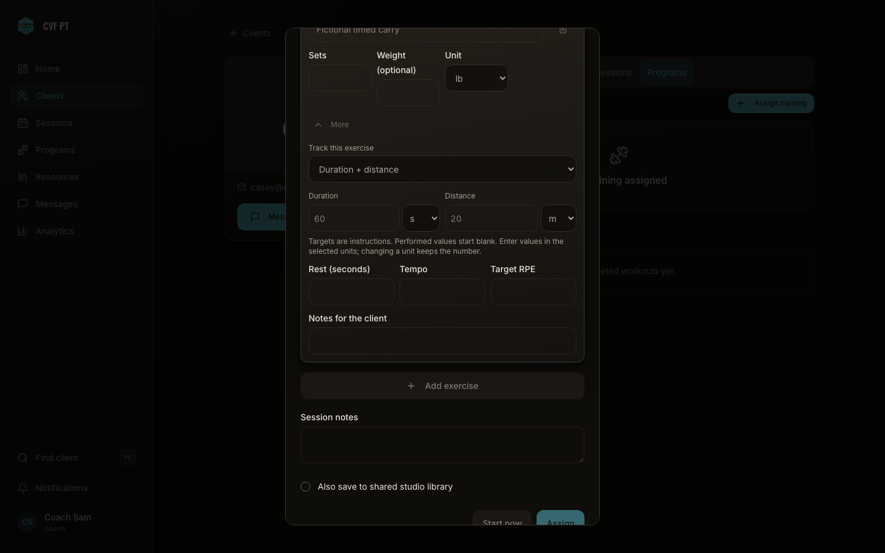
after · 54d6955a3836